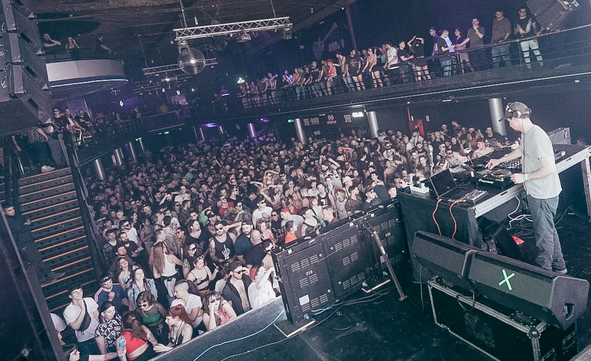
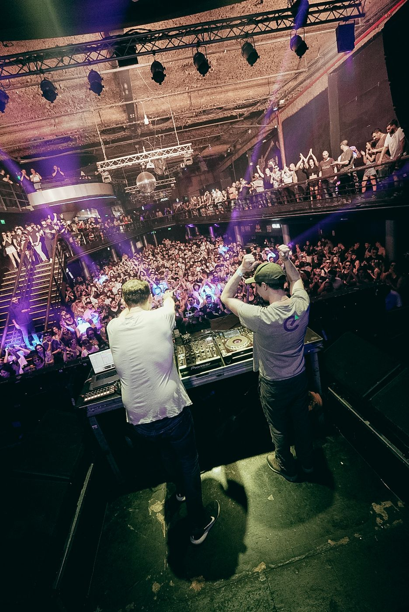
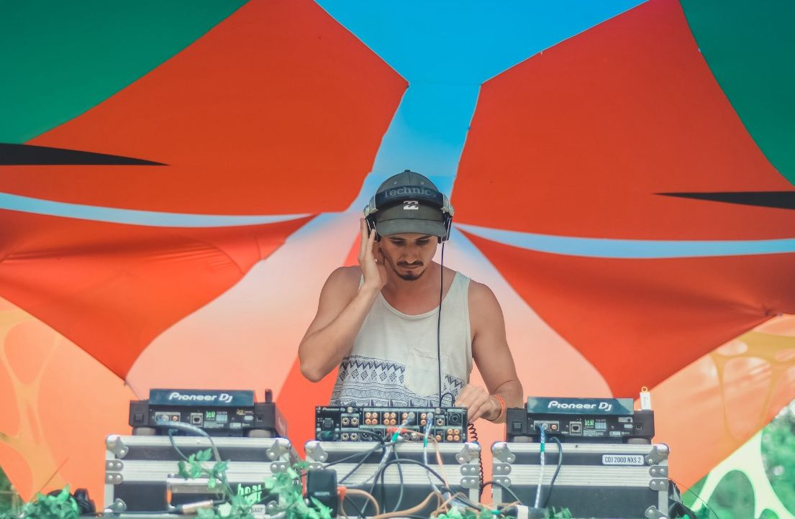

Presskit



- Universo Paralello (Brasil)
- Earthdance
- Global Eclipse Gathering (Arg Edit)
- Monte Mapu (Chile)
- Moonflower Festival
- Groove, Psychedelic Temple - RPC, BsAs
- Iono Music
- Synk 87
- X7M
- Vagalume Records
- 360 Music
- Geomagnetic Records
- Ovnimoon Records
- Psy Mania
SoundCloud
Spotify
Speed of Light
Deep Vibration, Emicron · Original Mix
2023
- El Bolsón, Río Negro, Argentina
- @emicron.music
- YouTube
- @emicronofficial
- Spotify
- Emicron